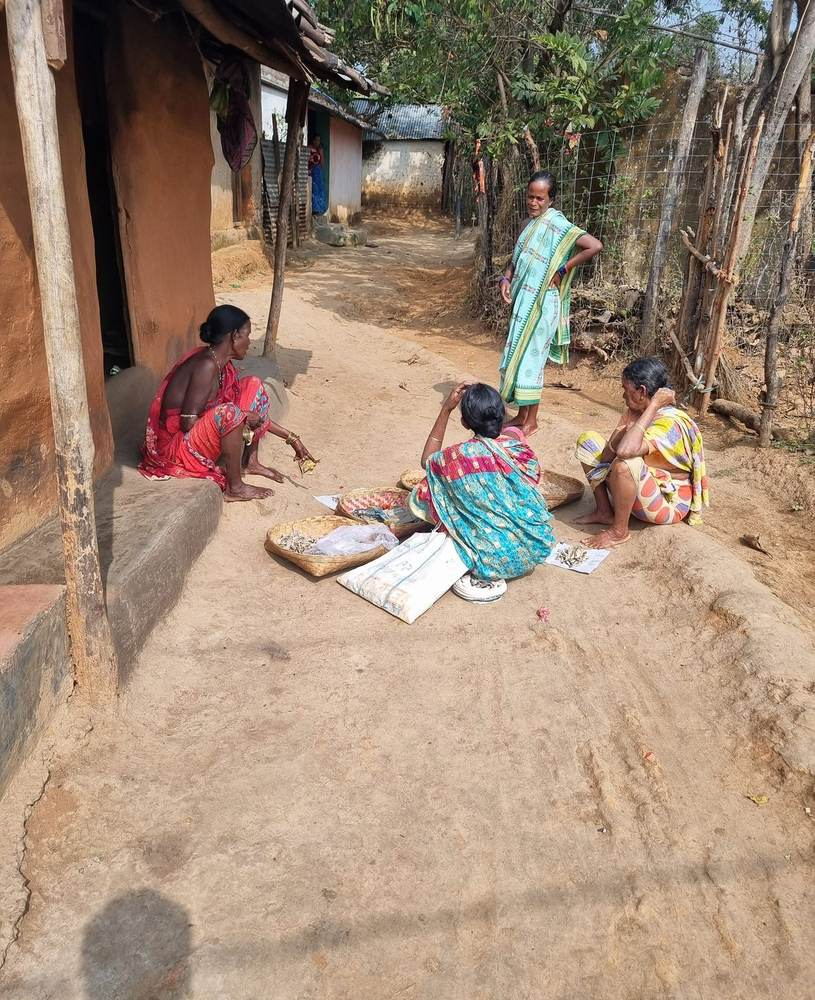
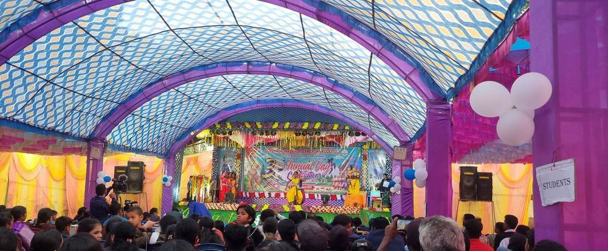
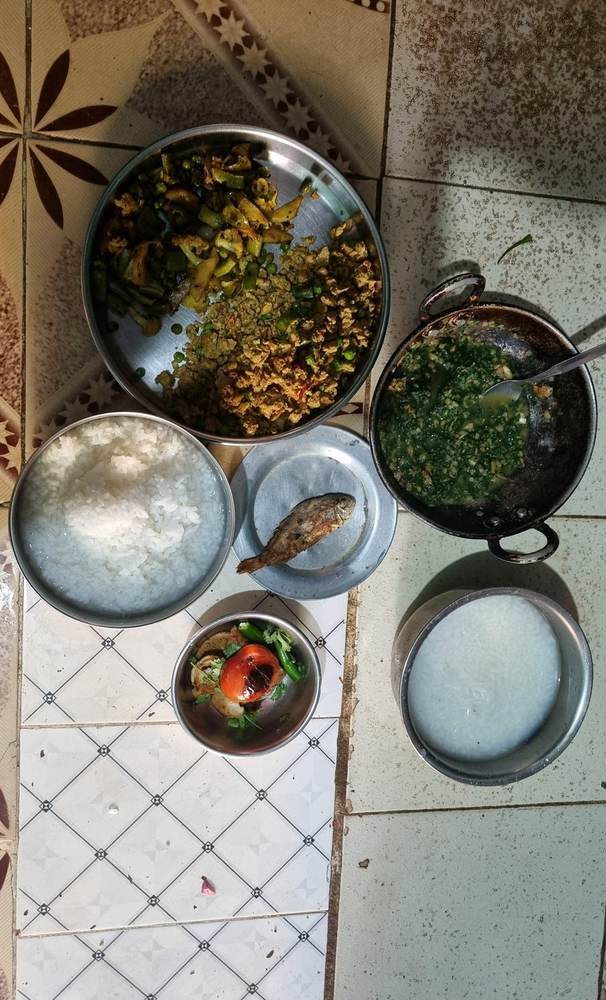
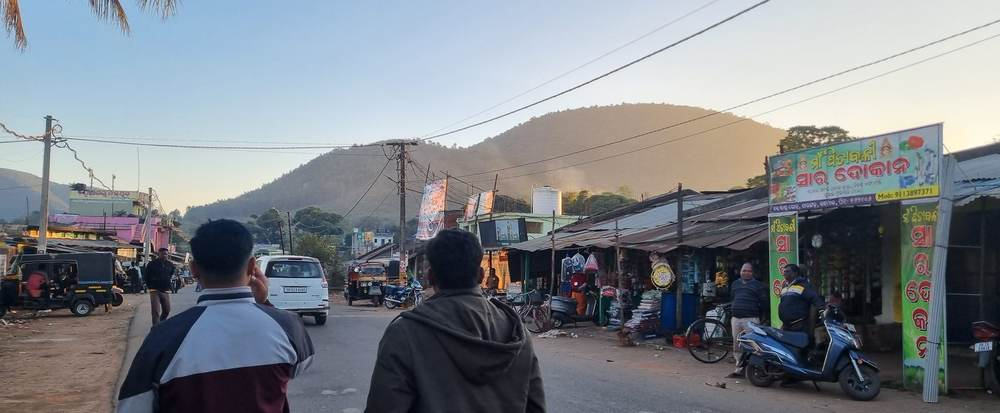

The archive
Moments and Memories
Even the simplest memory — we want a place in your heart. Everything collected so far, in sets. Phone pictures, not a shoot. Tap any one to see it whole.
 10 photographs
The land
Soil, hills, water, and what the monsoon does to all three.
10 photographs
The land
Soil, hills, water, and what the monsoon does to all three.
 11 photographs
The village
The ground, the road, the evenings. Where the day ends up.
11 photographs
The village
The ground, the road, the evenings. Where the day ends up.

1 photograph
Work
Paddy, harvest, firewood. What the day is actually spent on.
 13 photographs
The school
The blackboard, the mid-day meal, and the break in between.
13 photographs
The school
The blackboard, the mid-day meal, and the break in between.

1 photograph
Festival
The pandal, the flag, the days the village stops.

1 photograph
Food
Rice, dal, greens, and a chulha that is lit before you wake.

3 photographs
The market
The road, the shopfronts, and the haat when it comes.
More as they are taken. No face is published here before the person in it has agreed to it — for the children, that means the school and the family, not the camera. Some photographs are held back for exactly that reason.